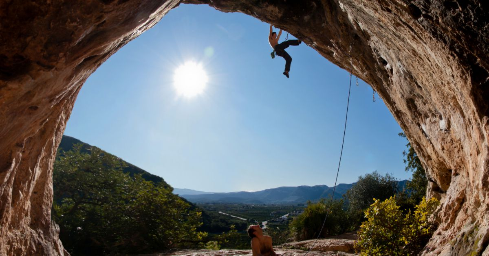

Home - CUS Catania
- Home - CUS Catania
Da Taurus Sport puoi trovare le ultime collezioni delle migliori marche di abbigliamento sportivo e attrezzature sportive professionali. Taurus Sport è a Lecco, Erba e Carate Brianza - Scarpe, abbigliamento e attrezzature sportive - Tecnica Sport
ENCI Sport è il sito ufficiale per gli sport dell'ENCI - Ente Nazionale Cinofilia Italiana. Agility dog e obedience. Calendario gare, ultimi risultati e aggiornamenti. - Sky Sport - Wikipedia
CUS Catania è il Centro Universitario Sportivo dell'Ateneo catanese. È stato fondato l'8 luglio 1947. Il gruppo sportivo universitario etneo - Negozio di sport a Torino: abbigliamento, scarpe ...
Anche se l'accezione comune del termine solitamente individua quali sport acquatici solo quelli praticati in piscina (nuoto, nuoto di fondo, nuoto sincronizzato, tuffi, tuffi dalle grandi altezze, pallanuoto e masters, cioè quelli governati dalla FINA), vanno a tutti gli effetti considerati tali anche gli sport remieri (canottaggio, canoa/kayak e canoa fluviale, Dragonboat, Rafting) e quelli ... - Diretta Radio Sport
Centro Sport Palladio Via Cavalieri di Vittorio Veneto, 29 36100 Vicenza VI Tel: 0444-963466 info@centrosportpalladio.it; Contattaci. Accetto il trattamento della privacy (leggi l'informativa) Invia Richiesta × Iscriviti alla newsletter. Centro Sport Palladio ... - HOME | SPORTITALIA
Alle ore 19.00 di lunedì 12 aprile si gioca la partita Chievo-Pisa, gara valevole per … Read More » - Cus Firenze
JOLLY SPORT s.r.l. P. IVA: 06282750014. Via Nizza 51/53, 10125 Torino (TO) Tel: 011 6507553. Fax: 011 6508036. Email: servizio-clienti@jollysport.it - 2T Sport srl | Abbigliamento Sportivo Personalizzato e su ...
Sport Atalanta Foppapedretti Notizie di Bergamo e approfondimenti di cronaca, politica, economia e sport. News Bergamo e provincia in tempo reale. - Sito ufficiale | ENCI Sport
Sport.it è il sito che racconta in diretta i principali eventi sportivi e che raccoglie consigli su prodotti e abbonamenti per chi ama lo sport. Al fine di fornire ai suoi lettori spunti di riflessione utili al loro shopping online sono pubblicati articoli dedicati ai principali sport. - Assindustria Sport | Società Sportiva dilettantistica a ...
SNAPS - OLTRE LO SPORT Hai perso la puntata di SNAPS - OLTRE LO SPORT? Nessun problema, riguarda la puntata integrale nella nostra sezione on demand

Chi Siamo CUS Catania La storia del CUS Catania Gli impianti Consiglio Direttivo Trasparenza Attività Universitaria Attività universitaria Come iscriversi Planning Corsi Full Open Uso degli impianti Tornei e campionati Campus Concorsi e bandi Corsi Full Open Attività Sportiva e Ginnastica finalizzata alla Salute e al Fitness Altri Corsi Corsi in convenzione Nuoto – Altair Club Tango argentino Padel Agonistica Agonistica Sezioni agonistiche Arrampicata sportiva Atletica leggera Basket Basket in Carrozzina Canottaggio Rugby Scherma Tennis C.A.S. E Campus C.A.S. Campus Sportivo Campus Sportivo Nautico Campus Universitario Estivo News Tutte le news Rassegna stampa SAD Promo Corsi all’aperto Contatti Login Chi Siamo CUS Catania La storia del CUS Catania Gli impianti Consiglio Direttivo Trasparenza Attività Universitaria Attività universitaria Come iscriversi Planning Corsi Full Open Uso degli impianti Tornei e campionati Campus Concorsi e bandi Corsi Full Open Attività Sportiva e Ginnastica finalizzata alla Salute e al Fitness Altri Corsi Corsi in convenzione Nuoto – Altair Club Tango argentino Padel Agonistica Agonistica Sezioni agonistiche Arrampicata sportiva Atletica leggera Basket Basket in Carrozzina Canottaggio Rugby Scherma Tennis C.A.S. E Campus C.A.S. Campus Sportivo Campus Sportivo Nautico Campus Universitario Estivo News Tutte le news Rassegna stampa SAD Promo Corsi all’aperto Contatti Login CUS Catania
dove lo sport è di casa!
Atletica, bel week end di gare alla Cittadella. Bene i nostri atleti Bruno e Fiorito
12 Aprile, 2021Scherma, sette cusini qualificati al campionato nazionale cadetti nella spada e nel fioretto
12 Aprile, 2021Atletica: gare sulla pista della Cittadella, scherma: al via la stagione agonistica, basket F : partenza col botto
9 Aprile, 2021Basket, parte oggi il campionato di C femminile: CUS CT in campo col PGS Sales
7 Aprile, 2021CUS CARD CATANIA
La CUS Card è la tessera associativa del CUS Catania. Ha validità annuale secondo il calendario accademico, dal 1 settembre al 31 agosto.
Full Open Convenzioni 0 + Attività 0 + Fasce orarie 0 + Convenzioni
I NOSTRI SPONSOR E PARTNERS
A.S.D. CUS Catania
sede legale: Viale Andrea Doria, n° 6
95125 Catania, Sicilia, Italia.
tel. 095336327
fax 095336478
codice fiscale: 80007070875
partita iva: 03429600871
Contatti
Segreteria studentiResponsabile attività universitaria
Segreteria di Presidenza
Altri contatti
Login Staff
Accedi ©2017 CUS Catania | creato da WorldPc Home Features About Us Explore Schedule Banner Gallery Testimonials Results Pricing Plans News Top Products Subscribe Questo sito o gli strumenti terzi da questo utilizzati si avvalgono di cookie. Chiudendo questo banner, scorrendo questa pagina, cliccando su un link o proseguendo la navigazione in altra maniera, acconsenti al loro utilizzo. Ok Leggi di più